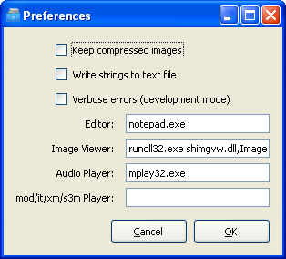

The preferences dialog can be opened from the Edit menu and is used for entering global preferences for the SLUDGE Project Manager (changes you make here will apply no matter what projects you open).

Keep compressed images:
If this option is checked, the compressed images generated during compilation will be kept on your machine after compilation. This will take up extra space but will decrease the time it takes to compile a project, as during subsequent compilations any images which have not changed do not need to be recompressed.
Write strings to text file:
During compilation, generate a file containing all the strings used in your game. Useful if you want to spellcheck the strings without also spellchecking your SLUDGE code.
Verbose errors (development mode):
Include function names and other debugging information in your compiled game. This means that run-time error messages are more meaningful. It's recommended that you keep this option checked while developing a game, and uncheck it before compiling a release version.
External programs:
Lets you choose which programs you'd like the SLUDGE project manager to call when handling the various file types with which it has to deal. You will find this only on Windows and Linux, on Mac the programs that are associated with the file types by the OS will be used.
About the SLUDGE Project Manager
Project Manager: "Project Settings" Dialog
SLUDGE and this SLUDGE documentation are copyright Hungry Software and contributors 2000-2010